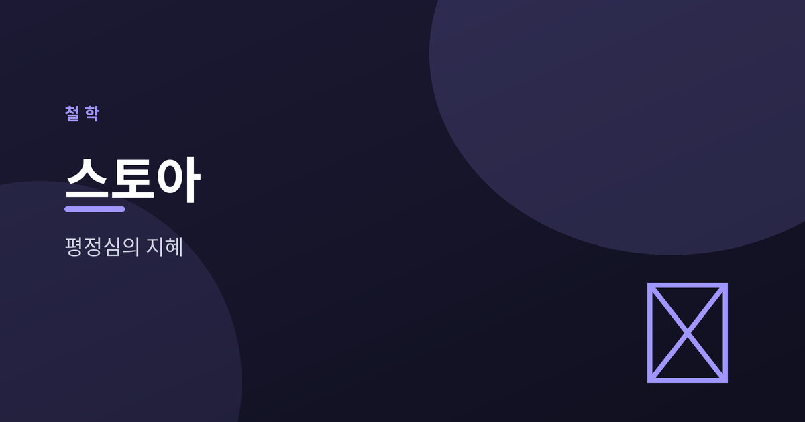
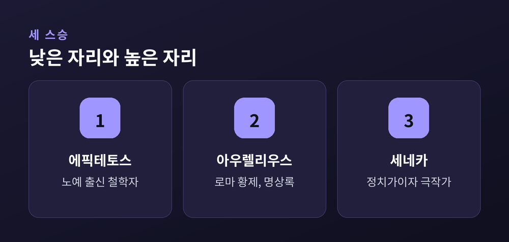
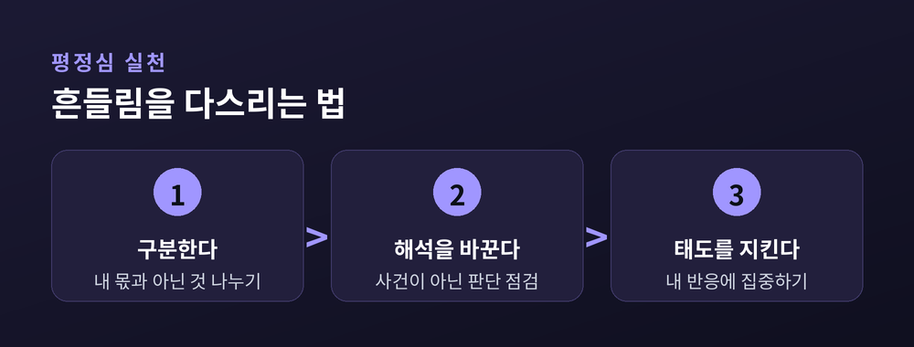

통제할 수 있는 것과 없는 것, 평정심의 지혜

우리는 하루에도 수십 번 흔들립니다. 날씨, 타인의 말, 예상치 못한 사고. 대부분 내 힘으로 어쩔 수 없는 것들입니다. 그런데도 우리는 그것들에 마음을 다 내어줍니다. 스토아 철학은 바로 이 지점을 파고듭니다.
스토아 철학의 핵심은 단순합니다. 세상을 내가 통제할 수 있는 것과 없는 것으로 나누는 일입니다. 노예 출신 철학자 에픽테토스는 이렇게 정리했습니다. 나의 판단, 욕구, 태도는 내 몫입니다. 반면 몸, 재산, 평판, 타인의 행동은 내 몫이 아닙니다.
문제는 우리가 이 둘을 자주 뒤섞는다는 데 있습니다. 남의 인정을 내가 통제할 수 있다고 착각하면, 인정받지 못하는 순간 무너집니다. 반대로 통제 불가능한 것을 내려놓으면 마음은 한결 가벼워집니다. 에픽테토스는 "우리를 괴롭히는 것은 사건이 아니라 그 사건에 대한 우리의 판단"이라고 말했습니다.
이분법은 체념이 아닙니다. 오히려 내 힘을 낭비하지 않고 정확히 쓰기 위한 지도입니다. 바꿀 수 없는 것에 쏟던 에너지를, 바꿀 수 있는 나의 태도로 되돌리는 일입니다.
스토아 철학이 흥미로운 이유는 그 실천자들의 신분이 극과 극이었다는 데 있습니다. 에픽테토스는 노예였습니다. 마르쿠스 아우렐리우스는 로마 황제였습니다. 세네카는 부유한 정치가이자 극작가였습니다.
가장 낮은 자리와 가장 높은 자리, 그 사이 어디쯤에서도 같은 결론에 도달했다는 점이 이 철학의 힘을 보여줍니다. 황제 마르쿠스 아우렐리우스는 전쟁터의 막사에서 자기 자신에게 편지를 썼습니다. 훗날 『명상록』으로 불리는 글입니다. 권력의 정점에 있으면서도 그는 매일 자신의 유한함과 통제의 한계를 되새겼습니다.
세네카는 시간과 죽음에 대해 깊이 사유했습니다. 스토아 철학자들이 추구한 상태는 아파테이아, 즉 감정에 휘둘리지 않는 평정심입니다. 다만 오해는 금물입니다. 감정을 없애자는 게 아니라, 파괴적인 격정에 지배당하지 않겠다는 뜻입니다.

스토아의 태도는 종종 니체의 아모르파티와 비교됩니다. 아모르파티가 "운명을 열렬히 사랑하라"는 능동적 긍정이라면, 스토아는 "운명을 담담히 받아들이고 내 태도를 다스리라"에 가깝습니다. 예전엔 이 둘을 같은 말로 뭉뚱그렸다면, 지금은 온도 차가 분명하다고 봅니다. 하나는 뜨겁고, 하나는 서늘합니다.
놀라운 점은 이 오래된 지혜가 현대 심리학과 맞닿는다는 것입니다. 인지행동치료(CBT)의 뿌리에는 에픽테토스의 통찰이 있습니다. 사건 자체가 아니라 사건에 대한 해석이 감정을 만든다는 원리입니다. 통제할 수 없는 것을 붙잡지 않는 연습은 오늘날 불안 관리의 기본기이기도 합니다.
물론 한계도 인정해야 합니다. 모든 감정을 이성으로 다스리기는 어렵고, 지나친 초연함은 자칫 무관심으로 흐를 수 있습니다. 스토아는 만능 해법이 아니라, 흔들리는 마음에 놓는 하나의 닻입니다.

바꿀 수 없는 것 앞에서 우리는 종종 무력합니다. 하지만 그 앞에서 어떤 태도를 취할지는 언제나 내 몫으로 남습니다. 통제할 수 없는 것은 놓고, 통제할 수 있는 나를 다스리는 것. 그것이 평정심의 시작입니다. 오늘 나를 흔든 것 중, 정말 내 몫이었던 건 얼마나 될까요.